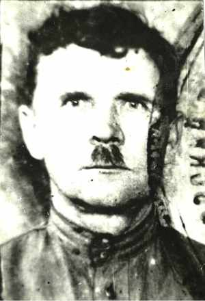
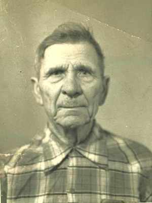
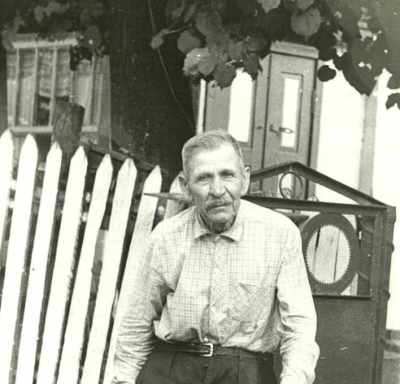

Кравчук Павло ЛукъяновичРодился в 1906г. в д.Миньковцы, Андрушовского рна, Житомирской обл., Украина. Женился на Маливской Ольге Семеновне (по национальности полька). В войне участия не принимал, так как был репрессирован и сослан в Сибирь на 8 лет. Колхозник. |

  в дер.Миньковцы |